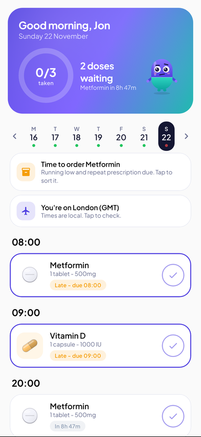
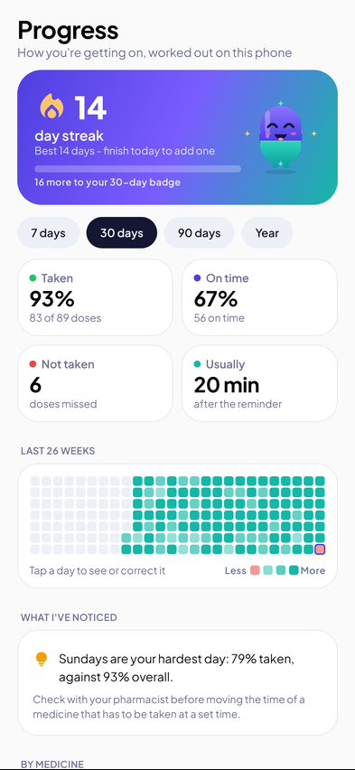
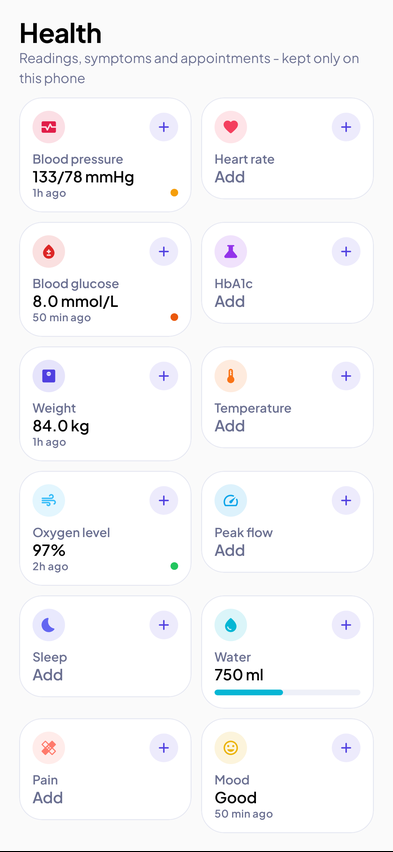
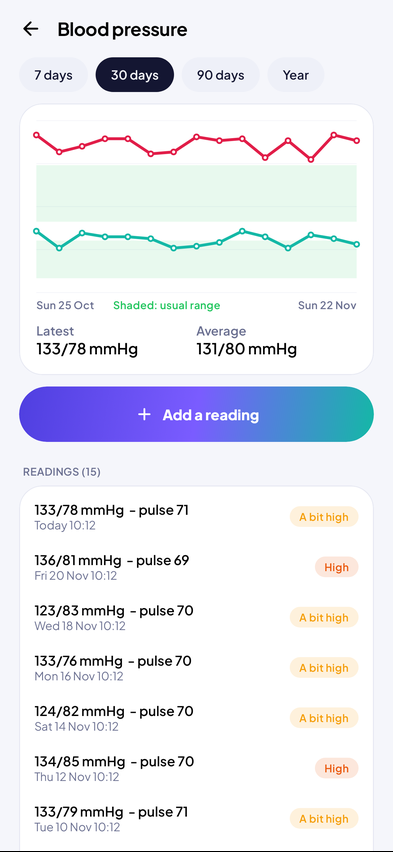
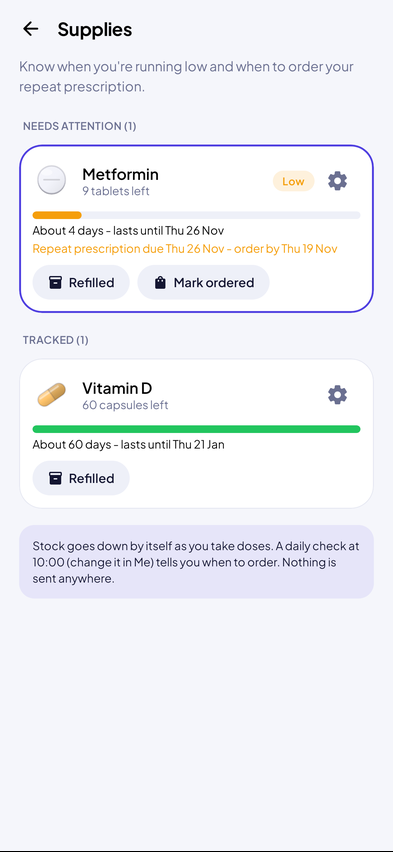
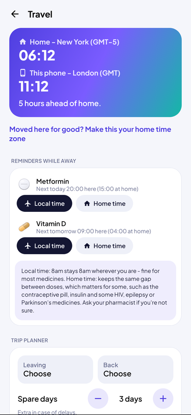
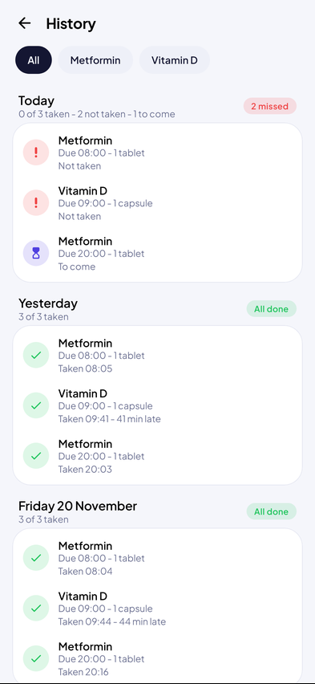
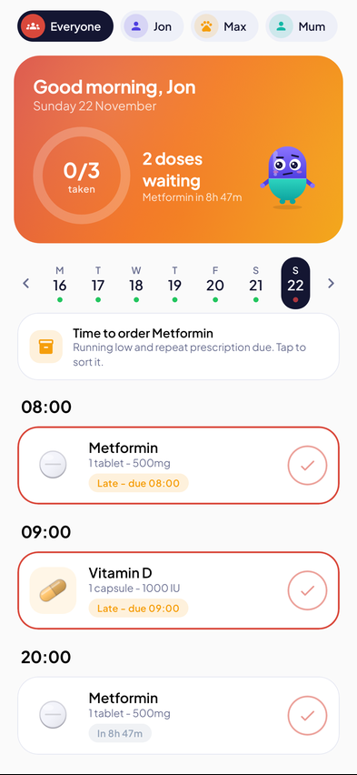

Every dose, on time. Privately.
Dosewise reminds you to take your medicines with an alarm you won't sleep through, keeps a record you can show your GP, and warns you before you run out. It knows about 20,000 UK medicines, and can read a pharmacy label with the camera.
It is free, with no adverts and nothing to unlock. There is no account, and the app cannot go online, so your health stays on your phone.
Download for AndroidHow to install
- Version 1.0.0
- Android 8 or later
- 38.5 MB
Free, with nothing to unlock. No adverts, no account with the developer, no tracking. Compare or read the release notes.
Chrome may say the file might be harmful. It shows this for app files that do not come from Google Play. Choose Download anyway.

- No subscriptionEvery feature is in the free app.
- No advertsNone in the app and none on this site.
- No internetThe app has no permission to go online.
- EncryptedYour record is locked on the phone.
A look inside
These are the real screens, drawn from the app's own code with made-up medicines. Swipe or scroll sideways to see them all.







How it works
Missed doses mostly come down to forgetting, running out, or a change of routine. Dosewise is built around all three.
Add your medicines
Search the UK list, browse by condition, or scan the box or pharmacy label. Pick how often, and when.
Take, snooze or skip
When it's time, the alarm rings. Tap Take – on the alarm, the notification, a widget or your watch.
See it add up
Streaks, a calendar and plain-English notes show how you're doing, and supplies tell you when to order more.
Everything is in, and all of it is free
Nothing below is held back for a paid tier, because there is no paid tier.
Reminders
- Alarms that really ring
- Full-screen, on the alarm volume, through Do Not Disturb, fading in and getting firmer each time you don't answer. Or a quiet notification – your choice for each medicine.
- Every kind of schedule
- Set times, every few hours, alternate days, weekly or monthly, cycles such as 21 on and 7 off, tapering doses, reminder windows, and as-needed medicines with daily limits.
- Smart snooze
- Learns how long you usually snooze, offers "until when you usually take it", and suggests moving a reminder you always answer late.
- Spoken reminders
- Alarms can say it out loud in your phone's own voice, with or without the medicine names.
- A backup person
- If you want, a normal text goes to someone you trust when a reminder goes unanswered for a while.
Adding medicines
- UK medicines built in
- About 20,000 NHS medicines, supplements and shop brands, searchable offline, or browse by condition. Or type any name.
- Scan the box or label
- Point the camera at a pharmacy label and Dosewise reads the medicine, strength, dose, times and pack size – on the phone, with no internet.
- Allergy warnings
- Note allergies and conditions and you're warned when a medicine may not suit you – always with "check with your pharmacist".
Your record
- Streaks and badges
- Streaks that count skipped-on-purpose doses fairly, badges from 3 days to a year, and Pip to celebrate.
- Progress
- Taken and on-time rates, a 26-week calendar, patterns by weekday and time of day, and plain-English notes on what's working.
- History you can correct
- Every dose, day by day. Forgot to tick one? Mark it taken at the right time – the original is kept.
Health
- Twelve readings
- Blood pressure, heart rate, glucose, HbA1c, weight with BMI, temperature, oxygen, peak flow, sleep, water, pain and mood.
- NHS ranges
- Each reading is checked against NHS guidance for adults, with clear advice when one is very high or very low.
- Diary and appointments
- Log symptoms and possible side effects, keep appointments with reminders, and your care team one tap away.
Supplies and travel
- Never run out
- Stock counts down as you take doses, with refill and repeat-prescription reminders, and a shortcut to the NHS App.
- Travel
- Choose home time or local time for each medicine, and get a packing list for your trip.
Sharing and safety
- Reports for your GP
- A clear PDF of medicines, missed doses, readings with trends and symptoms – plus a spreadsheet export.
- Emergency card
- Allergies, medicines and contacts on one card to show or share.
- Family and pets
- Look after medicines for children, parents or pets too – off until you want it.
Privacy
- No internet at all
- Dosewise has no permission to go online. Your data is encrypted on the phone.
- Locks and disguises
- PIN or fingerprint lock, discreet notifications, a disguised icon and name, and an emergency wipe PIN.
- Backups you hold
- An encrypted backup file, locked with a password only you know.
Your health is your business
No internet at all
Dosewise has no permission to go online. It cannot send your data anywhere.
Encrypted on the phone
The record is encrypted with a key kept by the phone's secure hardware, and left out of cloud backups.
Hidden if you need it
Lock it with a PIN, hide names in notifications, give it a different name and icon, or wipe it with a second PIN.
Installing and updating
Dosewise is not on Google Play, so your phone asks a couple of extra questions the first time.
Download the app file
Tap Download on your phone. The file is called Dosewise.apk and is about 38.5 MB. If Chrome says the file might be harmful, choose Download anyway.
Allow the install
Open the file. The first time, Android asks you to allow installs from your browser. Allow it, go back, and tap Install.
Run the alarm check
Open Dosewise, add your first medicine, then open Me and Alarm health check so your reminders can't be held back.
To update, download the newest version and install it over the old one. Your medicines and history are kept.
Questions
Is Dosewise really free?
Yes. There is no paid version, no subscription, no trial and no adverts, and nothing in the app is locked.
Is Dosewise on Google Play?
No. Dosewise is a personal project and is downloaded from this site as an Android app file. It needs Android 8 or later.
Does it need the internet?
No. The app does not ask Android for internet access at all, so it cannot go online. The medicines list, label scanning and everything else work with no signal. The only thing that leaves the phone is the optional text to a backup person, sent as an ordinary SMS.
Where are my medicines kept?
Only on your phone, in an encrypted database whose key is held by the phone's secure hardware. It is left out of Google's cloud backups. To move to a new phone, save an encrypted backup file.
Why might a reminder not ring?
Some phones hold back alarms to save battery. In the app, open Me and then Alarm health check. It checks the settings that matter and lets you test the alarm.
Is it medical advice?
No. Dosewise helps you remember and keep a record. The health ranges and warnings follow NHS guidance as a guide only – always follow your doctor, nurse or pharmacist. In an emergency call 999.
Can I use it for my children, parents or pets?
Yes. Turn on Family and pet profiles in Me. Each person gets their own medicines, readings and appointments, and reminders say who each dose is for.
Does it work with a smartwatch?
Yes. Reminders appear on a Wear OS watch with Take, Snooze and Skip buttons, through your phone's normal notifications.
How do I update Dosewise?
Download the newest version from this site and install it over the one you have. Everything is kept. The app cannot check for updates itself because it cannot go online.